Introduction
When creating a movie, a director has the opportunity to shape every frame, every dialog as he/she likes, therefor giving an infinite number of possibilities when shooting a movie. However, often when we watch a new movie, we feel like "Oh, I have seen this before" or "It was too predictable". But what makes a movie redundant ? What are the codes and lazy habits ?
Typography
I will be the leader of a company that ends up being worth billions of dollars, because I got the answers. I understand culture. I am the nucleus. I think that’s a responsibility that I have, to push possibilities, to show people, this is the level that things could be at.
Legend
Network Analysis
In this part we will analyse the network of directors. The nodes of the network are directors and two directors are connected if they have ever hired the same actor. The network consists of 1273 nodes and 217,725 edges. We will analyse the structure of the network and the centrality of nodes. Then we will analyse the communities of the network.
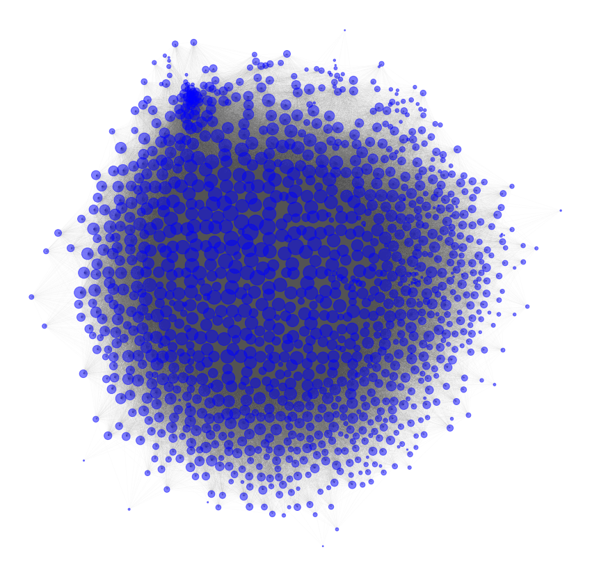
The network of directors
Degree Distribution
In this section we will take a closer look at the degree distribution and what it says about the network.
| 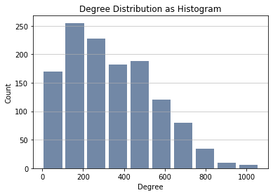 | The figure shows the degree distribution of the network. We see that the distribution is quite broad and most nodes have degrees between 100 and 300. |
Does the network structure resemble that of a random network?
The degree distribution of a random network does follow a Poisson distribution. To compare the degree distribution of our network with a Poisson we try to fit a normal distribution curve over the degree distribution to see how well it fits.
| 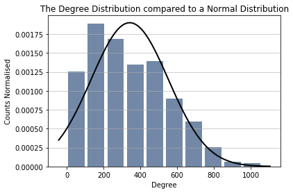 | As can be seen in the above figure, the destribution does not correspond very well to a normal distribution and hence the structure of the network is not like that of a random network. |
Is this a scale-free network?
A scale-free network is a network whose degree distribution follows a power law. (ch. 4 in networks book). The power law states that there are a lot of nodes with a very small degree and a few nodes with a very high degree. When plotting the degree distribution of a network that follows the power law with loglog axes it should resemble a straigh line (or close to that).
| 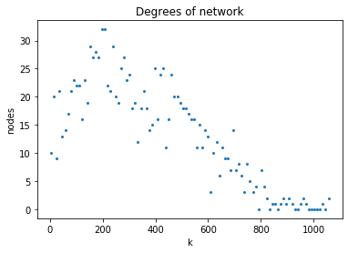 | It does not look like it follows the power law. Let's plot it using log-log axes. |
| 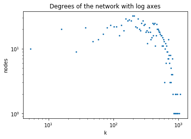 | It does not really follow the power law but it is still a very broad distribution meaning that the difference between the minum degree and the maximum degree is very large. |
Paradox is true 92.4 % of the time
In a nework with a power-law degree distribution the friendship paradox is true. The paradox states that almost everyone has fewer friends than their friends have on average. Meaning that the degree of most nodes is lower that the average degree of its neighbours. Even though we found that our network does not really have a power-law degree distribution the friendship paradox is still true for most nodes, so the network does still some property of a real-life network.
The small world property
Does the small world propery hold in our network? The small-world property states that the distance between two nodes is very small compared to the size of the network. The mathematical formula that states whether a netork has the small-world property is printed below (ch. 3 in Network Science book).
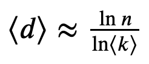
eq. 3.19 Network Science book
The equation states that the average distance between nodes should be approximately equal to the natural logarithm of n divided by the natural logarithm of the average degree.
Adding our values gives:
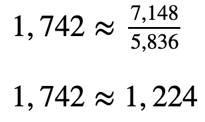
Are these number close enough to call the network a small world? We will say yes, and state that this is a small world network.
Conclusion regarding degree distribution
The network does not resemble a random network but it does not have a clear power-law degree distribution either. However the friendship paradox is true for 92.4% percente of the nodes and it does have the small world property. To sum up it does resemble a real-life network more than a random network.
Centrality
Degree Centrality
The degree of a node is the number of neighbours of the node, or rephrased as the number of other nodes the node is connected to.
Betweeness centrality
Betweeness centrality indicates how many shortest paths go through a node and is therefore a good meassure of how central a node is in a network.
Eigenvector centrality
The eigenvector centrality measures the centrality of a node based on the centrality of its neighbours. If a node is connected to many nodes that have a high eigenvector centrality then that node will have high eigenvector centrality. This is an indicator of how high influence a node has in the network.
Top 5
- Woody Allen
- Steven Spielberg
- Ridley Scott
- Martin Scorsese
- Oliver Stone
Top 5
- Ridley Scott
- Woody Allen
- Steven Spielberg
- Martin Scorsese
- Ron Howard
Top 5
- Steven Spielberg
- Woody Allen
- Ridley Scott
- Martin Scorsese
- Oliver Stone
The same three directors appear in the top 3 for all three centrality measures: Steven Spielberg, Woody Allen and Ridley Scott.
Who are these top three directors?First of all they are all very famous. Lets find their ratings, their vote count and how many movies they have directed.
| Steven Spielberg | Woody Allen | Ridley Scott | Average | Min | Max | |
|---|---|---|---|---|---|---|
| Rating | 6,894 | 6,692 | 6,604 | 6,23 | 3,45 | 8,0 |
| Vote Count | 62.266 | 15.512 | 43.083 | 3.379 | 501 | 67.239 |
| Number of movies | 33 | 49 | 24 | 8,30 | 1 | 66 |
| Genres | Drama, Adventure, Action | Comedy, Drama, Romance | Drama, Action, Thriller |
Most popular genres: Drama, Comedy, Thriller, Action, Romance |
||
Their vote count is high compared to the rest of the network, but their rating is not that high. This shows that directors who are central in the network do not necessary have a high rating. However their vote count is also an indicator of popularity or at least of how famous they are, and this is quite high for all of them. The fact that they all have a high number of movies is not surprising as this will of course give them a higher probality of being connected with other directors. Their genres are all very popular genres which also increases the likelihood that they share actors with other directors.
Community Detection
In this section we will describe the communities of the netork and analyse where these communities come from. We will do this by looking at some of the attributes that we have for the directors in our dataset.
We found the following communities
| Community | Size |
|---|---|
| 0 | 417 |
| 1 | 223 |
| 2 | 394 |
| 3 | 90 |
| 4 | 100 |
| 5 | 48 |
The modularity is 0,228. The modularity is above 0 which means that there are more edges within the communities than there are across communities. However the modularity is not that high which means that the community are not that well defined.
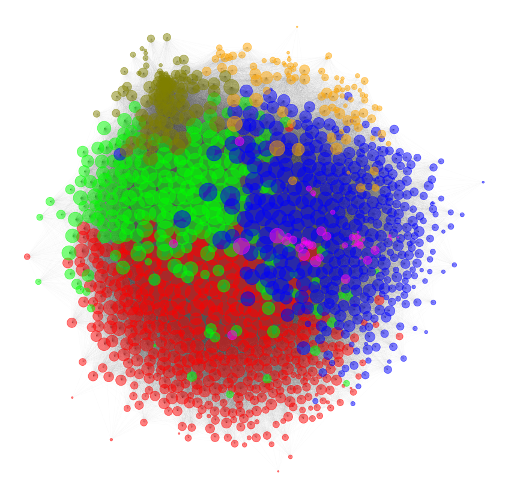
The communities of the network illustrated using different colors.
The plot above illustrates the communities using different colours for each community. We see that the network is split into three bigger parts and two smaller parts at the right and one small community inside another one
Analysis of communities
We will look at three different attributes: language, genre, active period and rating, to see if anything can be said about the communities regarding these. We want to find out if the communities can be distinguished using any of these attributes.
Languages
We have seperated the directors into groups of languages based on the language of their movies.
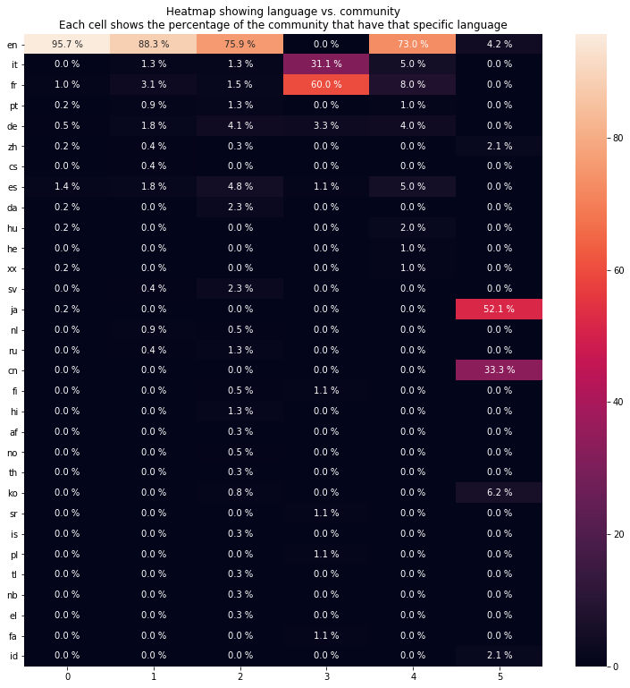
The figure shows a heatmap where each cell shows the percentage of the community that direct movies of that specific language. Community 3 and 5 seem to be based on language. Community 3 mostly has mostly directors of french movies and some italian movies, community 5 mostly directors of japanese and cantonese movies. The other communities have mostly directors of english movies however community 2 does have a higher percentage of movies of many of the smaller languages than the other communities.
Genres
We have created one group for each genre and added directors to the groups that they have worked whithin. One director might have worked in more than one genre.
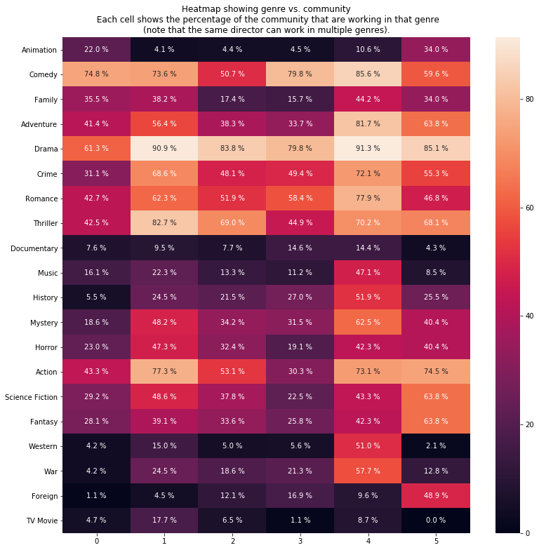
The figure shows a heatmap where each cell shows the percentage of the community that have directed movies in that specific genre. As mentioned above, each directed might have worked in multiple genres therefor the percentages for one community do not add up to 100%.
We observe that all communities are a mix of multiple genres which makes sense since we know that directors and actors do not restrict themselves to a single genre. There are some genres that are quite common among all communities such as drama, comedy, romance, thriller and action. These are all genres that are somewhat general and a lot of movies will have these genres listed as their genre along with other more significant genres. There are however some differences between the communities that might be of significans. Communty 4 has directors working in multiple genres that are not as common in the other communities such as music, history, mystery, western and war. Community 5 has a high percentage of directors working in the genres foreign, fantasy and science fiction. Community 1 has a high percentage of directors working in the genres thrillers, mystery, horror and science fiction.
Active Period
We have created one group for each decade and add directors to the group if they were active in that decade. We define the active period of a director as the time from the release of the first movie to the release of the last movie.
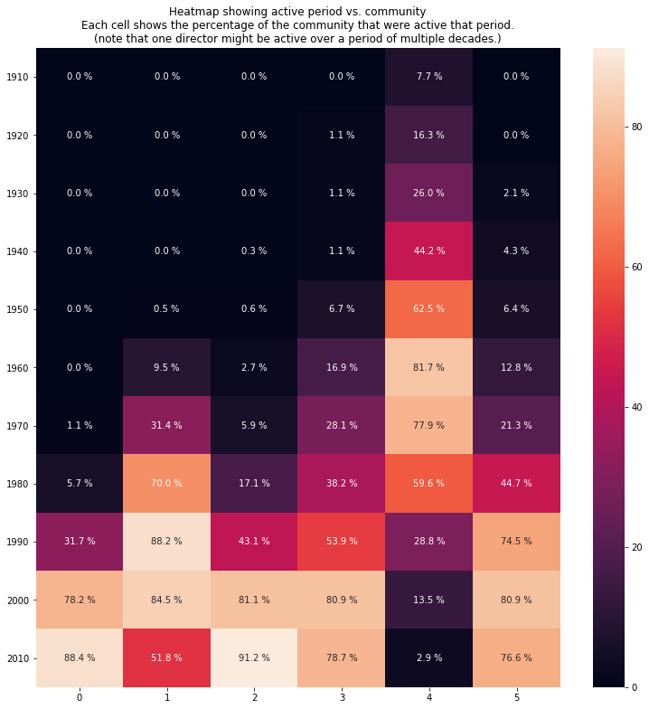
The figure shows a heatmap where each cell is the percentage of the community that were active in that decade. A director can be active over a period of more than 10 years and hence can be in multiple groups. Therefor the percentages of each community do not add up to 100%. We observe that community 4 consists mainly of older movies. It makes sense that the directors of older movies are grouped together as not many of the same actors are acting in older as well as newer movies. We can also spot that directors of movies released after year 2000 are in community 0 and 2, while directors of movies from 1980-2000 are more dominant in community 1. Community 3 and 5 are not as concentrated on a specific period but are spread out from 1970 until 2020.
Rating
We have divided the ratings into 5 groups of equal size: low, medium-low, medium, medium-high and high. The directors are then added to the group for which their agerage rating falls within.
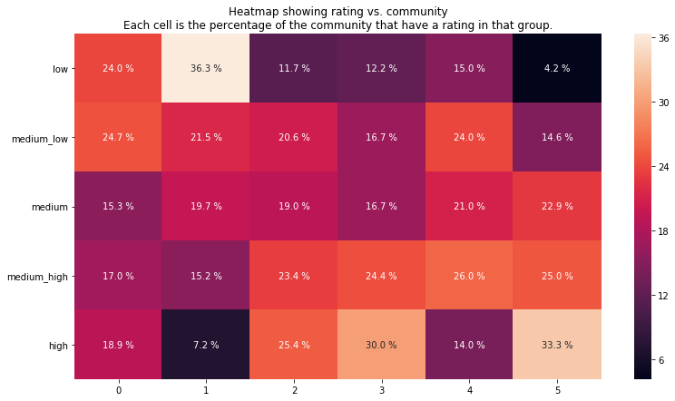
The figure shows a heatmap where each cell is the percentage of the community that have a rating in that group. There does not seem to be a high correlation between rating and communities. Community 0 and 1 have a larger part of low rating directors while community 2, 3 and 5 have a larger part of high rating directors. Community 4 has the largest part around the medium rating. However there is not a huge difference in the numbers.
Conclusion about communities
So what can we say about the communities? First of all, the modularity is not significantly high, so the communities are not that solid. We examined different groupings of the directors to see if there is a correlation with the found communities. We tried grouping the directors by language, by genre, by active period and by rating. We discovered the following about the communities:
- Community 0 consists almost solely of directors of english movies. Regarding active period it consists mostly of directors active in the recent decades.
- Community 1 also consist mainly of directors of english movies. It has a high percentage of directors working in drama, thrillers and action. Over half of the community has been rated below medium and most directors were active in the years 1980-2010.
- Community 2 has a higher number of percentage of directors working in many of the smaller languages than the other communities. It consists mainly of directors active after 1990. Almost haf of the community has been rated above average.
- Community 3 consists mainly of directors of french and italian movies. Most of the directors in that community are working with commedy and drama. The directors have been active in the last 50 or so years. Over half of the community has been rated above average.
- Community 4 is characteries as being the community of directors of older movies. Most directors were active in the years 1940-1990. The genres are also a bit different than of the other communities. These directors were working more in the genres music, history, mystery, western and war which are genres that were more popular a few decades ago than they are today.
- Community 5 consists mainly of directors of japanese and cantonese movies. These directors are directing foreign, fantasy and science fiction movies and a more than a third of the community has received a high rating.
The analysis showed that some of the communities seem to be defined by attributes such as language (3 and 5) and active period (4) while the others are more mixed and it's harder to distinguish what makes the community.
So in what communities are our most central directors?Our guess would be in the mixed communities 0, 1 or 2. These are afterall also the largest communities and they seem to hold the more mainstreem directors.
- Steven Spielberg: 2
- Woody Allen: 1
- Ridley Scott: 2
The most central nodes are indeed in communies 1 and 2.
Conclusion
The network we created consisted of movie directors which are connected if they have hired the same actors. The structure of the network resembles that of a social network and the small world property holds. The top three directors regarding centrality are all famous directors which have directed a lot of movies and mostly work in the more popular genres.
We found 6 communities within the network and analysed these to find out what made these communities. We found out that some of the communities seemed to be based on language and the active periods of the directors while some were more a general mix.
Wordclouds
Wow so much fantasy
Romantic was a long oen
Oh ma boi science fiction
Sentiment analysis
Basic text element
Basic Elements
Buttons
Pick your style
Pick your size
Pick your color
Disabled Buttons
Buttons with Dropdown
Block Level Buttons
Inputs
Checkboxes
Radio Buttons
Toggle Buttons
Sliders
Badges
Primary Info Success Warning Danger RoseNotifications
Info alert: You've got some friends nearby, stop looking at your phone and find them...
Success Alert: Yuhuuu! You've got your $11.99 album from The Weeknd
Warning Alert: Hey, it looks like you still have the "copyright © 2015" in your footer. Please update it!
Error Alert: Damn man! You screwed up the server this time. You should find a good excuse for your Boss...
Typography
Header 1Thinking in textures
Header 2Thinking in textures
Header 3Thinking in textures
Header 4Thinking in textures
Header 5Thinking in textures
Header 6Thinking in textures
Paragraph I will be the leader of a company that ends up being worth billions of dollars, because I got the answers. I understand culture. I am the nucleus. I think that’s a responsibility that I have, to push possibilities, to show people, this is the level that things could be at.
Quote
I will be the leader of a company that ends up being worth billions of dollars, because I got the answers. I understand culture. I am the nucleus. I think that’s a responsibility that I have, to push possibilities, to show people, this is the level that things could be at.
— Jason Hodson, Web Designer
Muted Text
I will be the leader of a company that ends up being worth billions of dollars, because I got the answers...
Primary Text
I will be the leader of a company that ends up being worth billions of dollars, because I got the answers...
Info Text
I will be the leader of a company that ends up being worth billions of dollars, because I got the answers...
Success Text
I will be the leader of a company that ends up being worth billions of dollars, because I got the answers...
Warning Text
I will be the leader of a company that ends up being worth billions of dollars, because I got the answers...
Danger Text
I will be the leader of a company that ends up being worth billions of dollars, because I got the answers...
Small Tag
Header with small subtitle
Use "small" tag for the headers
Images
Rounded Image
Clyde Ford
Circle Image
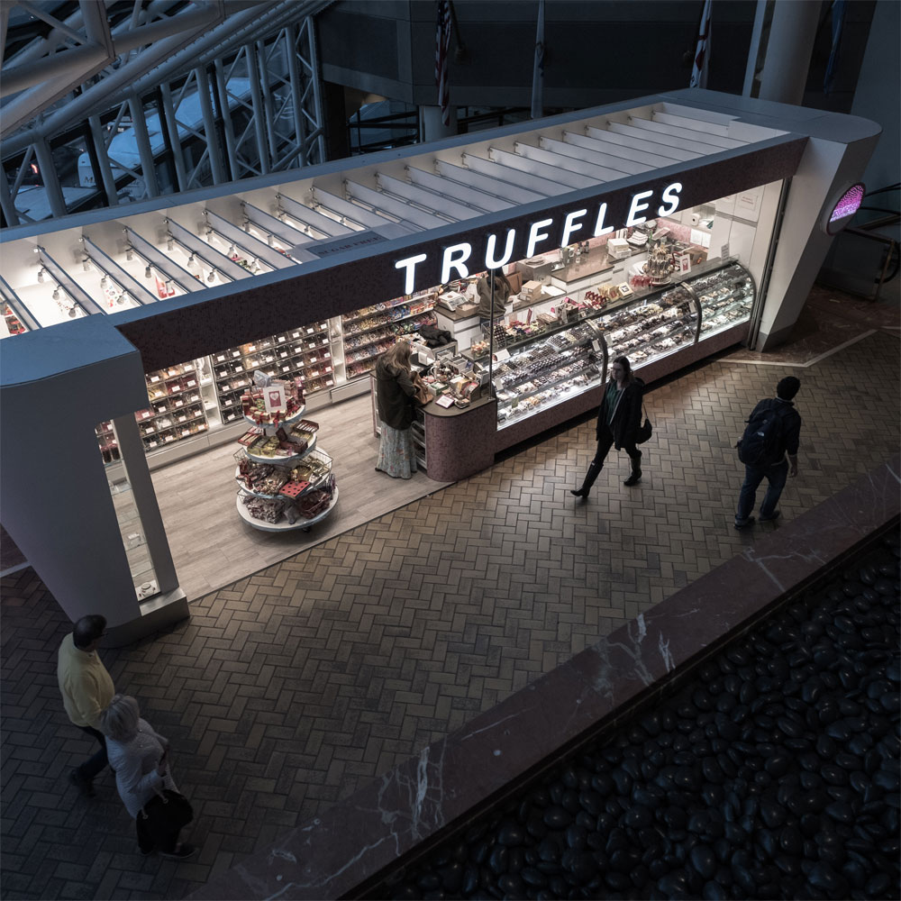
Clyde Ford
Circle Raised

Clyde Ford
Javascripts Components
Modals
Datetimepickers
Popovers
Tooltip
Completed with examples
The kit comes with three pre-built pages to help you get started faster. You can change the text and images and you're good to go. More importantly, looking at them will give you a picture of what you can built with this powerful kit.
Cards Styles
Cards with Image Round
Special title treatment
With supporting text below as a natural lead-in to additional content. A small river named Duden flows by their place and supplies it with the necessary regelialia. It is a paradisematic country, in which roasted parts of sentences fly into.
Go somewhereCards with image

Card title
With supporting text below as a natural lead-in to additional content. A small river named Duden flows by their place and supplies it with the necessary regelialia. It is a paradisematic country.
Cards Profile

Paula Fortland
A Web Designer Based from LondonWith supporting text below as a natural lead-in to additional content.
Available for Freelance